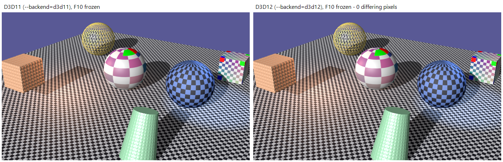
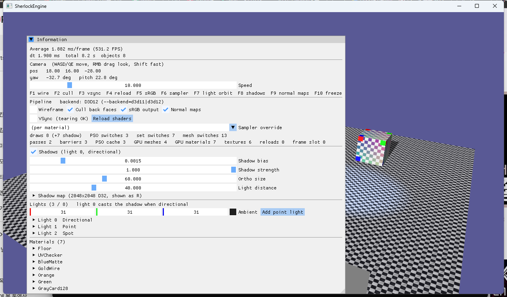

8단계 · D3D12 백엔드 (RHI 검증)
RHI가 정말 API를 감추는지는 두 번째 백엔드를 붙여 봐야 압니다. RHI/D3D12/에 D3D12Device·D3D12CommandList를 구현하고 --backend=d3d12로 같은 씬을 그렸습니다. Renderer·Material·Mesh·Scene·App 코드는 한 줄도 바뀌지 않았고(PSO Desc에 렌더 타깃 포맷을 채우는 세 줄이 유일한 Renderer 변경), F10으로 애니메이션을 고정한 두 백엔드의 화면은 904,392픽셀 중 0픽셀 차이입니다. Debug Layer와 GPU 기반 검증(GBV)을 켠 채 메시지 0건입니다. PSO·루트 시그니처·배리어·펜스라는 로드맵의 목표 개념이 이 단계에서 처음으로 "에뮬레이션"이 아니라 네이티브가 됩니다.
3단계의 프레임 인덱스가 펜스와 업로드 링의 기준이 되고, 4단계의 BindingLayout이 루트 시그니처가 되고, ResourceSet이 디스크립터 테이블이 되고, 6단계의 Barrier가 진짜 ResourceBarrier가 되고, 1단계에 넣어 둔 RTV/DSV 포맷이 PSO 생성의 필수 항목이 됩니다. 셰이더는 fxc가 만든 DXBC를 그대로 씁니다 — D3D12는 DXBC를 받고, 두 백엔드가 같은 바이트코드를 쓰니 픽셀 비교가 의미를 가집니다. D3D11에서 드라이버가 몰래 해 주던 세 가지(자원 이름 바꾸기, 수명 관리, 상태 전이)를 전부 우리가 하게 됐고, 그 자리마다 6단계까지 미리 파 둔 구멍이 있었습니다.
1.요약
| RHI 개념 | D3D11 백엔드 | D3D12 백엔드 |
|---|---|---|
| Device 생성 | D3D11CreateDevice + 팩토리 | 어댑터 열거 → D3D12CreateDevice(FL 11_0), 직접 커맨드 큐, Debug Layer + GBV |
| 스왑체인 | FLIP_DISCARD 2장, 장치가 pDevice | FLIP_DISCARD 3장, 큐가 pDevice. 백버퍼마다 텍스처 핸들, GetCurrentBackBufferIndex |
| 프레임 경계 | Present. 동기화는 드라이버 | 슬롯(kFrameCount=2)마다 커맨드 할당자·펜스 값·업로드 링·가비지. BeginFrame이 N−2 완료를 기다림 |
| CommandList | ImmediateContext 래퍼 | ID3D12GraphicsCommandList 기록, EndFrame에서 Execute |
| Buffer (Default) | CreateBuffer + 초기 데이터 | DEFAULT 힙 + UPLOAD 스테이징 + CopyBufferRegion (동기) |
| Buffer (Dynamic) | 프레임 수만큼 복제, Map(WRITE_DISCARD) | 리소스 없음. UpdateBuffer가 프레임 링에서 256B 정렬 조각 → 드로우마다 루트 CBV 주소 |
| Texture | 초기 데이터 배열 → CreateTexture2D | GetCopyableFootprints → 업로드 힙 행 복사 → CopyTextureRegion 밉마다 → 배리어 |
| 뷰 | ID3D11*View 객체 | 디스크립터 힙 슬롯. CPU 힙(RTV·DSV·스테이징) + 셰이더 가시 힙(SRV·샘플러) |
| BindingLayout | 슬롯 번호표 | 루트 시그니처(루트 CBV + SRV/샘플러 테이블), 레이아웃 조합별 캐시 |
| ResourceSet | 슬롯마다 *SSet* | 셰이더 가시 힙의 영구 테이블 범위. 드로우 시 SetGraphicsRootDescriptorTable |
| PSO | 상태 객체 5개 + Bind 7호출 | D3D12_GRAPHICS_PIPELINE_STATE_DESC 하나. RTV/DSV 포맷 필수 |
| Barrier | 추적 + Debug 검증 | ResourceBarrier(Transition). 추적 상태가 before |
| 파괴 | ComPtr 해제 | 슬롯 가비지에 넣고 그 프레임의 펜스 뒤에 해제 (리소스·PSO·디스크립터) |
| ImGui | imgui_impl_dx11 | imgui_impl_dx12 + 우리 SRV 힙의 alloc/free 콜백 |
2.두 번째 백엔드가 검증하는 것
D3D11에서 D3D12로 가면 세 가지가 애플리케이션의 책임이 됩니다: CPU/GPU 동기화, 리소스 수명과 상태, 자원 바인딩9,11. D3D11의 Map(WRITE_DISCARD)는 드라이버가 "무한한 메모리"처럼 이름을 바꿔 주지만 D3D12에서는 우리가 링 버퍼와 펜스로 같은 일을 해야 합니다1,9. 7단계까지의 RHI가 이 차이를 인터페이스 밖으로 새지 않게 만들었는지가 이 단계의 질문이었고, 답은 "Renderer 세 줄"이었습니다. 그 세 줄도 새로운 개념이 아니라 1단계에 "D3D11은 안 쓰지만 D3D12는 필수"라고 적어 둔 필드에 실제 값을 넣는 것이었습니다.
선택으로 표시된 단계였지만 건너뛰면 RHI는 "D3D11 래퍼"에 머뭅니다. 특히 다음 세 가지는 D3D12를 붙이기 전에는 맞는지 알 수 없었습니다: (1) 3단계의 kFrameCount 복제가 실제 프레임 지연 동기화와 맞물리는가, (2) 6단계의 Barrier 호출 위치가 GBV를 통과하는가, (3) 4단계의 레지스터 배정(재질 t0–7/s0–3, 프레임 t8–/s4–)이 루트 시그니처로 그대로 옮겨지는가. 셋 다 통과했습니다.
3.장치 · 큐 · 스왑체인 · 프레임 자원
장치는 DXGI 팩토리로 어댑터를 열거해(WARP 제외) FL 11_0으로 만듭니다. D3D12에는 D3D11CreateDeviceAndSwapChain 같은 것이 없고, 스왑체인의 pDevice 자리에 커맨드 큐가 들어갑니다9. 5단계에서 장치와 스왑체인을 분리해 둔 덕에 스왑체인 코드는 그대로이고, 백버퍼가 3장이 되어 각각 텍스처 핸들을 갖습니다. D3D11은 백버퍼 0 하나만 보이지만 D3D12는 회전이 명시적이라 GetCurrentBackBufferIndex로 이번 프레임의 버퍼를 고릅니다.
// D3D12Device::BeginFrame — 3단계의 프레임 인덱스가 여기서 펜스의 기준이 된다
m_frameIndex = m_frameCounter % kFrameCount;
if (m_fenceValues[m_frameIndex] != 0 && m_fence->GetCompletedValue() < m_fenceValues[m_frameIndex])
{
m_fence->SetEventOnCompletion(m_fenceValues[m_frameIndex], m_fenceEvent); // 프레임 N−2 가 끝날 때까지
WaitForSingleObject(m_fenceEvent, INFINITE);
}
ReleaseGarbage(m_frameIndex); // 그 프레임이 쓰던 리소스·디스크립터를 이제 놓는다
m_rings[m_frameIndex].offset = 0; // 그 프레임의 업로드 링도 재사용
m_allocators[m_frameIndex]->Reset();
m_list->Reset(m_allocators[m_frameIndex].Get(), nullptr);
m_list->SetDescriptorHeaps(2, heaps); // SRV 힙 + 샘플러 힙. 프레임에 하나씩만
m_backBufferIndex = m_swapChain->GetCurrentBackBufferIndex();
// EndFrame
m_list->Close();
m_queue->ExecuteCommandLists(1, lists);
m_swapChain->Present(vsync, flags);
m_queue->Signal(m_fence.Get(), m_nextFenceValue);
m_fenceValues[m_frameIndex] = m_nextFenceValue++;프레임 슬롯은 kFrameCount(2)개이고 각 슬롯이 커맨드 할당자, 펜스 값, 업로드 링, 가비지 목록을 갖습니다. 백버퍼 3장은 이것과 별개입니다 — 슬롯은 "CPU가 얼마나 앞서 갈 수 있는가", 백버퍼 수는 "컴포지터가 얼마나 들고 있는가"입니다. Microsoft의 펜스 기반 자원 관리 문서가 설명하는 링 버퍼 시나리오가 정확히 이 구조입니다1.
4.메모리와 업로드
4.1 Default 버퍼와 텍스처: 동기 업로드
D3D12에는 힙 종류가 셋입니다: DEFAULT(GPU 전용), UPLOAD(CPU 쓰기 → GPU 읽기), READBACK3,8. 정점·인덱스 버퍼와 텍스처는 DEFAULT 힙에 만들고, 초기 데이터는 UPLOAD 힙의 스테이징 버퍼에 써서 CopyBufferRegion/CopyTextureRegion으로 옮깁니다. 이 복사는 별도의 업로드 커맨드 리스트에 기록해 즉시 실행하고 완료를 기다립니다(ExecuteUploadSync). 로드 시점에만 쓰는 경로라 동기여도 됩니다. 텍스처는 GetCopyableFootprints가 알려 주는 밉별 오프셋과 256바이트 정렬된 행 간격(RowPitch)에 맞춰 행 단위로 복사합니다 — 원본의 rowPitch와 다르기 때문입니다5.
버퍼는 배리어 없이 씁니다. 버퍼는 COMMON에서 COPY_DEST로 암묵 승격되고 ExecuteCommandLists가 끝나면 COMMON으로 돌아오므로(decay), 다음에 정점 버퍼로 쓸 때 다시 승격됩니다12. 텍스처는 승격되지 않으므로 업로드 뒤 명시적으로 COPY_DEST → PIXEL_SHADER_RESOURCE | NON_PIXEL_SHADER_RESOURCE 배리어를 겁니다.
4.2 Dynamic 버퍼: 업로드 링과 드로우마다 루트 CBV
여기가 8단계에서 가장 중요한 설계 결정입니다. 3~4단계의 Renderer는 오브젝트 상수버퍼 하나를 드로우마다 UpdateBuffer합니다. D3D11에서는 Map(WRITE_DISCARD)가 호출마다 새 메모리를 주므로 각 드로우가 자기 데이터를 봅니다. D3D12에서 "프레임 슬롯마다 버퍼 하나"로 흉내 내면 한 프레임의 모든 드로우가 마지막 데이터를 보게 됩니다 — GPU는 나중에 실행되기 때문입니다. 로드맵이 "Map 후 즉시 사용이 D3D12에서는 프레임 지연을 고려해야 한다"고 경고한 지점입니다.
해법은 Dynamic 버퍼에 리소스를 두지 않는 것입니다. 프레임 슬롯마다 8 MB UPLOAD 링(영구 매핑)을 두고, UpdateBuffer가 256바이트 정렬 조각을 잘라 데이터를 복사한 뒤 그 GPU 가상 주소를 버퍼 핸들에 기억합니다. 드로우 직전에 CommandList가 현재 루트 시그니처의 CB 슬롯마다 SetGraphicsRootConstantBufferView(root, 주소)를 다시 겁니다. 루트 디스크립터는 드라이버가 드로우마다 버전을 관리하므로6 이 패턴이 정확히 D3D11의 이름 바꾸기와 같은 결과를 냅니다. 링은 BeginFrame에서 슬롯이 재사용될 때(N−2 프레임 완료 뒤) 리셋됩니다.
// D3D12Device::UpdateBuffer (Dynamic)
uint8_t* dst = AllocateUpload(buffer->desc.size, address); // (offset + 255) & ~255
std::memcpy(dst, data, size);
buffer->gpuAddress = address;
buffer->updatedFrame = m_frameCounter;
// D3D12CommandList::ApplyBindings — DrawIndexed 직전
for (각 셋 s : 현재 루트 시그니처)
for (CB 슬롯 i) m_list->SetGraphicsRootConstantBufferView(binding.cbvRoot[i], buffer->gpuAddress);
if (테이블이 dirty) SetGraphicsRootDescriptorTable(srvTableRoot / samplerTableRoot, …);Dynamic 버퍼는 "쓰는 프레임에 반드시 갱신"이 계약입니다. 이전 프레임의 링 조각은 재사용될 수 있기 때문입니다. Debug에서는 updatedFrame이 현재 프레임이 아니면 한 번 경고합니다. Renderer는 원래부터 모든 Dynamic 버퍼를 매 프레임 올리므로(D3D11의 WRITE_DISCARD도 사실상 같은 계약) 경고가 난 적은 없습니다.
4.3 지연 해제
D3D11에서 ComPtr을 놓으면 드라이버가 GPU가 끝날 때까지 객체를 붙들어 줍니다. D3D12는 참조 카운트를 인터페이스 수명에만 쓰고, GPU가 쓰는 동안 리소스가 살아 있게 하는 것은 앱의 책임입니다11. 그래서 Destroy*는 객체와 디스크립터 범위를 현재 슬롯의 가비지 목록에 넣고, 그 슬롯의 펜스가 지나간 BeginFrame에서 놓습니다. PSO 캐시의 Clear(셰이더 핫리로드)도 같은 길을 갑니다 — 이전 세대의 PSO가 아직 실행 중인 커맨드 리스트에 걸려 있을 수 있습니다. Resize와 종료는 WaitForGpu로 비운 뒤 즉시 놓습니다.
5.디스크립터 힙과 ResourceSet
D3D12의 뷰는 객체가 아니라 디스크립터 힙 안의 슬롯입니다2. CPU 전용 힙 네 개(RTV 64, DSV 16, 스테이징 SRV 1024, 스테이징 샘플러 64)에 뷰를 만들어 두고, 셰이더가 읽을 것은 셰이더 가시 힙 두 개(CBV/SRV/UAV 4096, 샘플러 256)로 CopyDescriptorsSimple합니다. 힙은 bump + free list 할당기입니다(D3D12DescriptorHeap).
ResourceSet은 생성 시 셰이더 가시 힙에서 SRV 슬롯 수만큼, 샘플러 슬롯 수만큼 연속 범위를 영구 할당받고 스테이징 뷰를 복사해 둡니다. 드로우 때는 테이블 시작 GPU 핸들 하나만 겁니다. 셋은 값이라 바뀌지 않으므로(4단계: 텍스처가 바뀌면 셋을 새로 만든다) 프레임마다 복사할 이유가 없습니다. 파괴 시 범위는 지연 해제됩니다.
슬롯 순서와 테이블 순서가 같아야 합니다. 루트 시그니처의 SRV 테이블은 슬롯마다 range 하나(NumDescriptors 1, OffsetInDescriptorsFromTableStart = APPEND)를 선언 순서대로 쌓고, 셋도 같은 순서로 복사합니다. 재질 셋의 t0·t1이 연속이든(체커·노멀) 프레임 셋의 t8이 혼자든 같은 규칙입니다.
6.BindingLayout → 루트 시그니처
4단계가 "루트 시그니처의 D3D11 미리 그리기"라고 부른 것이 여기서 진짜가 됩니다. PSO Desc의 bindingLayouts[](프레임/오브젝트/재질) 순서대로 루트 파라미터를 쌓습니다: CB 슬롯은 루트 CBV(GPU 주소, 4.2절), SRV 슬롯들은 디스크립터 테이블 하나, 샘플러 슬롯들은 테이블 하나. 루트 시그니처의 세 파라미터 종류(루트 상수, 루트 디스크립터, 테이블) 중 루트 디스크립터는 CBV·raw/structured 버퍼만 가능하고 텍스처 SRV는 테이블이어야 합니다6 — 4단계가 정한 "CBV는 루트 디스크립터, SRV/Sampler는 테이블"이 그 제약입니다. 가시성은 슬롯의 스테이지 마스크에서(VS만·PS만·둘 다 = ALL). 레지스터 space는 전부 0입니다 — SM 5.0 DXBC는 space를 모릅니다(4단계의 X3721).
// 결과: 3셋 → 루트 파라미터 8개
[0] CBV b0 (ALL) [1] CBV b2 (PS) [2] SRV 테이블 { t8 } (PS) [3] 샘플러 테이블 { s4 } (PS) // 프레임 셋
[4] CBV b1 (VS) // 오브젝트 셋
[5] CBV b3 (ALL) [6] SRV 테이블 { t0, t1 } (PS) [7] 샘플러 테이블 { s0 } (PS) // 재질 셋
// 그림자 PSO(2셋) → 5개. 레이아웃 조합이 같으면 루트 시그니처를 공유한다 (Device 캐시).루트 시그니처가 바뀌면 루트 파라미터가 전부 무효가 되므로 CommandList는 그때 모든 테이블을 dirty로 표시합니다. 4단계의 "셋끼리 레지스터가 겹치지 않는다" 검증이 없었다면 여기서 D3D12SerializeRootSignature가 거부했을 것입니다.
7.PSO: 1단계의 빈칸이 채워지다
D3D12_GRAPHICS_PIPELINE_STATE_DESC는 1단계 PipelineStateDesc의 D3D12 원형이라 변환이 필드 대 필드입니다. 다른 점 하나: D3D12 PSO는 토폴로지의 "종류"(점·선·삼각형)만 알고 리스트/스트립은 커맨드 리스트가 정하므로 SetPipelineState가 IASetPrimitiveTopology도 같이 부릅니다. 픽셀 셰이더가 없는 깊이 전용 PSO는 PS = {nullptr, 0}, NumRenderTargets = 0입니다.
첫 실행은 DrawIndexedInstanced 에러로 시작했습니다: "PSO의 렌더 타깃 포맷(R8G8B8A8_UNORM)이 RTV 포맷(R8G8B8A8_UNORM_SRGB)과 다르다". 메인 패스는 5단계부터 백버퍼의 sRGB 뷰에 그리는데 PSO Desc의 rtvFormats[0]은 1단계 기본값 UNORM이었습니다. D3D11은 이 필드를 보지 않아 4단계 동안 아무 일도 없었던 것입니다. Renderer의 GetPipelineFor가 rtvFormats[0] = srgbOutput ? SRGB : UNORM, dsvFormat = D24S8을 채우는 세 줄이 8단계의 유일한 Renderer 변경이고, F5로 sRGB를 끄면 UNORM 변형 PSO가 하나 더 생깁니다.
8.배리어와 상태
6단계에서 no-op으로 넣어 둔 Barrier(texture, before, after)가 ResourceBarrier(Transition)가 됩니다. before는 호출 코드가 적은 값이 아니라 텍스처의 추적 상태를 씁니다 — 6단계에서 D3D11 백엔드가 그 둘이 어긋나면 경고하게 해 두었고, 실제로 어긋난 곳이 없어 여기서 그대로 통과했습니다. 상태 열거 ResourceState는 D3D12_RESOURCE_STATES의 부분집합으로 설계했으므로 변환은 1:1이고 ShaderResource만 PIXEL | NON_PIXEL 둘을 합칩니다13.
초기 상태가 6단계의 추적 시작점과 같아야 합니다. 스왑체인 버퍼는 COMMON(=PRESENT)으로 시작하고12 Renderer는 매 프레임 Present → RenderTarget → Present를 겁니다. 메인 깊이 버퍼는 Renderer가 배리어를 걸지 않으므로 DEPTH_WRITE로 만듭니다. 그림자 맵은 Renderer의 첫 배리어가 Common → DepthWrite이므로 COMMON으로 만듭니다(깊이 텍스처는 승격되지 않아 이 명시적 전이가 필요합니다). 초기 데이터가 있는 텍스처는 COPY_DEST로 만들어 업로드 뒤 SRV 상태로 옮깁니다. 프레임당 배리어 4회는 D3D11과 같습니다.
9.셰이더: DXBC 그대로
로드맵은 dxc로 DXIL(SM 6.0)을 제안했지만, D3D12는 fxc가 만든 DXBC(SM 5.0/5.1)도 받습니다9. 두 백엔드가 같은 .cso를 쓰면 픽셀 비교가 컴파일러 차이 없이 RHI만 비교하게 되므로 이쪽을 택했습니다. ShaderCompiler의 구현(D3DCompile·D3DReflect)은 그래픽스 API가 아니라 바이트코드 형식에 묶인 것이라 RHI/DXBC/로 옮겼고 두 백엔드가 공유합니다. 4단계의 리플렉션 대조와 핫리로드도 그대로 D3D12에서 동작합니다. DXIL은 SM 6 기능(웨이브 연산, 메시 셰이더)이 필요할 때 RHI/DXIL/로 들어오면 됩니다. D3D12는 셰이더 객체가 없으므로 D3D12Shader는 바이트코드 사본일 뿐이고 PSO 생성 시 D3D12_SHADER_BYTECODE로 넘깁니다.
10.ImGui와 Debug Layer / GBV
imgui_impl_dx12는 셰이더 가시 SRV 힙 하나와 그 안의 슬롯 할당·해제 콜백을 요구합니다(1.91.5부터의 InitInfo 방식)14. 우리 SRV 힙과 D3D12DescriptorHeap::Allocate/Free를 그대로 줍니다. 그래야 프레임에 힙이 하나만 바인딩되고, ImGui가 내부에서 SetDescriptorHeaps를 불러도 상태가 바뀌지 않습니다. 7단계의 어댑터 다섯 메서드 뒤에 들어갔으므로 App은 여전히 어느 백엔드인지 모릅니다. 그림자 맵 미리보기의 GetImGuiTextureId는 텍스처마다 셰이더 가시 SRV를 하나 영구 할당해 그 GPU 핸들 값을 돌려줍니다.
Debug 빌드는 Debug Layer에 더해 GPU 기반 검증(GBV)과 동기화 큐 검증을 켭니다. GBV는 셰이더를 패치해 실행 시점에 "잘못된 상태의 리소스 접근, 해제된 리소스의 디스크립터, 힙 범위 밖 인덱싱"을 잡습니다4. 이 세션에서 GBV를 켠 채 531 FPS가 나왔고 메시지는 0건입니다. 필터로 거른 것은 CLEARRENDERTARGETVIEW_MISMATCHINGCLEARVALUE·CLEARDEPTHSTENCILVIEW_MISMATCHINGCLEARVALUE 둘뿐입니다 — 스왑체인 백버퍼에는 최적화 클리어 값을 줄 수 없어 항상 나는 성능 힌트입니다. 메시지는 D3D11과 같이 프레임마다 InfoQueue에서 콘솔로 옮기고, 종료 시 ReportLiveDeviceObjects를 찍습니다.
11.함정과 해결
- PSO 렌더 타깃 포맷. 7절. D3D11이 4단계 동안 무시해 준 필드. Renderer가 sRGB 뷰에 맞춰 채운다.
- 드로우마다 갱신되는 상수버퍼. 4.2절. 프레임 슬롯 복제로는 부족하고 링 + 드로우마다 루트 CBV 재바인딩이 답. D3D11의 WRITE_DISCARD가 감춰 온 것.
- 비교 함수가 붙은 일반 샘플러.
SamplerDesc::compareFunc기본값 LessEqual이 비등방·선형 샘플러에도 들어가 Debug Layer가 "의도가 아닐 것"이라 5번 경고. Comparison 필터일 때만 지정하도록 두 백엔드 모두 수정. - F10은 시스템 키. F10 혼자 눌러도 WM_SYSKEYDOWN이고 DefWindowProc가 메뉴 모드에 들어가 다음 키(F5)를 삼켰다. 첫 sRGB 토글 검증이 128을 돌려준 이유. 메뉴가 없으므로 F10을 DefWindowProc에 넘기지 않게 했다.
- d3dx12.h 없음.
CD3DX12_*헬퍼는 SDK가 아니라 DirectX-Headers 패키지에 있다10. 의존성을 더하는 대신 필요한 셋(힙 속성, 버퍼 Desc, 전이 배리어)을D3D12Convert에 직접 적었다. - 수명. 4.3절. 텍스처를 놓을 때 디스크립터 다섯 종(RTV·sRGB RTV·DSV·스테이징 SRV·ImGui용 SRV)도 함께 지연 해제해야 힙이 새지 않는다.
- 시저. D3D12는 시저 사각형이 없으면 아무것도 그리지 않는다(경고도 없다).
BeginRenderPass가 뷰포트와 같은 크기로 건다. - 프레임 셋 t8과 그림자 패스. 6단계의 "SRV 언바인드" 논리는 D3D12에서 필요 없지만(자동 언바인드가 없다) 배리어가 대신 hazard를 정의한다. GBV가
DEPTH_WRITE상태의 그림자 맵을 SRV로 읽는 드로우가 없음을 확인해 준 셈이다.
12.검증과 스크린샷
- 완료 기준 ① "
--backend=d3d12로 같은 씬(그림자 포함)이 픽셀 단위로 같게" — F10으로 고정한 D3D11 캡처와 D3D12 캡처를 클라이언트 영역(ImGui 헤더 포함) 904,392픽셀 비교: 0픽셀 차이. 그림 1. - 완료 기준 ② "Debug Layer·GBV 경고 0건" — GBV + 동기화 큐 검증을 켠 Debug 실행에서 시작 안내 1건 외 메시지 0. 필터는 클리어 값 힌트 2종뿐.
- sRGB 토글(F5): D3D12에서 회색 카드 128 → 55, 배경 (89,89,149) → (25,25,76). 5단계 D3D11 값과 동일 — UNORM 변형 PSO와 UNORM RTV 뷰가 맞물린다.
- 리사이즈 1500×900 ↔ 900×500 6회 + 최소화/복원:
WaitForGpu→ 백버퍼 3장·깊이 즉시 해제 →ResizeBuffers→ 재생성. 메시지 0. - 셰이더 핫리로드: 편집 → 세대 2, 에러 → 유지, 복구 → 세대 3(4단계 스크립트에
--backend=d3d12). PSO 지연 해제로 실행 중인 커맨드 리스트가 깨지지 않는다. - 패널: backend D3D12, 531 FPS(GBV 켬), passes 2, barriers 3, PSO 3, 루트 시그니처 2(8·5 파라미터). Release 빌드에서
--backend=d3d12실행 확인. - D3D11 회귀: 샘플러 수정 뒤 D3D11 고정 캡처가 이전과 동일(D3D12와 0픽셀 차이).
- 격리 grep:
RHI/D3D12/밖ID3D12 | d3d12.h | dxgi1_6.h | imgui_impl_dx120건,RHI/D3D11|D3D12|DXBC밖 D3D11 기호 0건(주석 포함). 종료 시 Live Object: 장치 1건만.

--backend=d3d11, 오른쪽 --backend=d3d12. 전체 화면 비교에서 차이 픽셀 0. 원본은 images/2026-09-23-phase8-d3d11-frozen.png / -d3d12-frozen.png.
13.참고 문헌
- Microsoft Learn, Fence-Based Resource Management — 펜스로 프레임 진행을 추적해 업로드 힙 링 버퍼를 재사용. learn.microsoft.com/…/fence-based-resource-management
- Microsoft Learn, Descriptor Heaps. learn.microsoft.com/…/descriptor-heaps
- Microsoft Learn, Uploading different types of resources — 업로드 버퍼 하나에 서브할당, D3D11 과의 비교, 256 정렬. learn.microsoft.com/…/uploading-resources
- Microsoft Learn, GPU-based validation and the Direct3D 12 Debug Layer — GBV 가 잡는 오류와 비용. learn.microsoft.com/…/using-d3d12-debug-layer-gpu-based-validation
- Microsoft Learn, ID3D12Device::GetCopyableFootprints — 밉별 오프셋·행 수·행 크기, RowPitch 256 정렬. learn.microsoft.com/…/nf-d3d12-id3d12device-getcopyablefootprints
- Microsoft Learn, Root Signatures Overview — 루트 상수·루트 디스크립터·테이블, 드로우마다 버전 관리. learn.microsoft.com/…/root-signatures-overview
- Microsoft, DirectX-Graphics-Samples — D3D12 샘플(HelloWorld, Multithreading 의 그림자 맵 배리어 등). github.com/microsoft/DirectX-Graphics-Samples
- Microsoft Learn, Memory Management in Direct3D 12. learn.microsoft.com/…/memory-management
- Microsoft Learn, Porting from Direct3D 11 to Direct3D 12 — 장치 생성, 업로드, PSO, 커맨드 리스트, 동기화, 바인딩, 상태, 스왑체인, DXBC 지원. learn.microsoft.com/…/porting-from-direct3d-11-to-direct3d-12
- Microsoft Learn, Direct3D 12 programming environment setup — SDK 헤더·라이브러리, d3dx12.h 는 별도 배포. learn.microsoft.com/…/directx-12-programming-environment-set-up
- Microsoft Learn, Important Changes from Direct3D 11 to Direct3D 12 — 명시적 동기화, 수명, PSO, 커맨드 리스트, 디스크립터. learn.microsoft.com/…/important-changes-from-directx-11-to-directx-12
- Microsoft Learn, Using Resource Barriers to Synchronize Resource States in Direct3D 12 — 승격·붕괴 규칙, 백버퍼 초기 상태. learn.microsoft.com/…/using-resource-barriers-to-synchronize-resource-states-in-direct3d-12
- Microsoft Learn, D3D12_RESOURCE_STATES. learn.microsoft.com/…/ne-d3d12-d3d12_resource_states
- Dear ImGui, docs/BACKENDS.md — 표준 백엔드 사용 권고.
imgui_impl_dx12.h의ImGui_ImplDX12_InitInfo(SRV 힙 + 할당 콜백). github.com/ocornut/imgui/blob/master/docs/BACKENDS.md